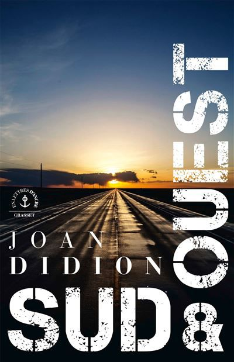
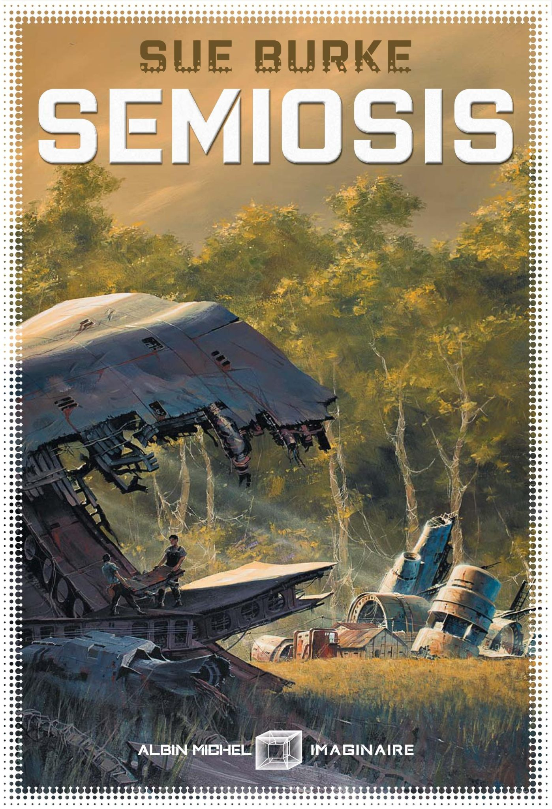
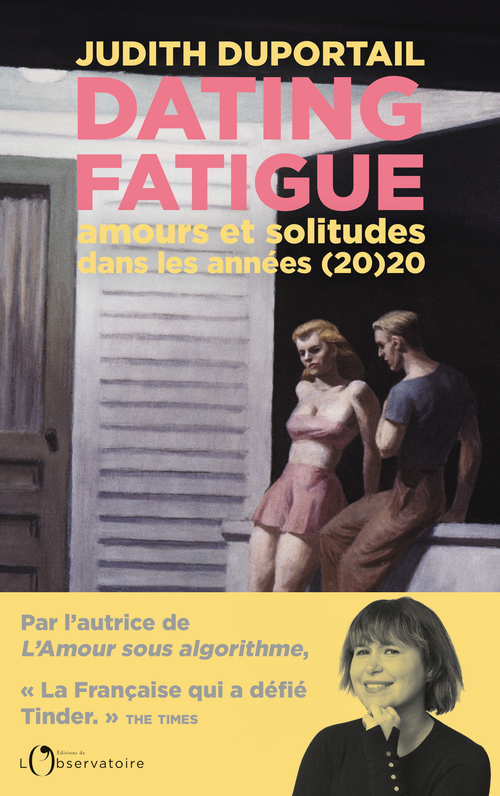

Au cours de ces deux derniers mois, j’ai lu quelques bouquins et je suis même retourné en bibliothèque, où je n’avais pas mis les pieds depuis trop longtemps. L’occasion de remarquer que les rayons, notamment en matière d’imaginaire, ont été bien renouvelés. En plus de quatre précédents billets déjà rédigés ici, voici un petit bilan de mes lectures de cet été brumeux.
J’avais bien vu passer Les Tambours du dieu noir, sorti cette année en français, chez divers chroniqueurs et chroniqueuses de l’imaginaire, mais je n’avais pas vraiment idée de son contenu. On y trouve en réalité deux courts récits. Le premier, qui donne son nom au livre, se déroule à La Nouvelle-Orléans dans un XIXème siècle alternatif et un tantinet magique. L’enjeu n’y est autre que la survie de ce territoire libre et indépendant, régulièrement assailli de tempêtes démentielles, tandis que l’esclavage est toujours une réalité sur une partie de ce qui fut les Etats-Unis. Le second récit (L’étrange affaire du djinn du Caire), lui, se déroule au Caire au début du XXème siècle : là encore, uchronie et fantastique vont de pair, et nous quittons l’aventure pour un récit plus policier. Les qualités du livre sont réelles (qu’il s’agisse des points de vue proposés, du propos ou des univers déployés), mais je dois bien avouer avoir eu la tête ailleurs pendant la majorité de la lecture. Dommage pour moi.
Le hasard a voulu que Sud & Ouest, lui aussi, commence à La Nouvelle-Orléans. Joan Didion y raconte, sous forme de carnet et dans un style assez “brut”, un voyage réalisé dans le sud des Etats-Unis en 1970. Plutôt court (moins de 200 pages), ce livre a quelque chose de fascinant tant par les rencontres relatées par la journaliste et romancière américaine, qui ne cache pas sa sensation de voyager dans le temps (et pas pour le meilleur), que par les atmosphères étouffantes qu’elle y décrit.
Semiosis, dans un tout autre style, est un livre de science-fiction qui m’a laissé une impression mitigée. L’autrice Sue Burke y raconte l’arrivée, l’installation et la vie d’une cinquantaine d’hommes et de femmes sur une exoplanète bourrée de vie. Pétrie d’idéaux et de bonne volonté, la petite communauté fait la rencontre d’une espèce bien particulière, source d’intérêt, de fascination mais aussi de méfiance. Nous suivons l’évolution de cette relation à travers plusieurs générations, pendant une centaine d’années. Si la nature de ce “premier contact” est très originale (à peu près l’antithèse du Moineau de Dieu sur ce point), la majorité du livre m’a surtout évoqué le qualificatif de “poussif”, sauf dans sa dernière partie, qui voit le rythme s’accélérer et gagner en efficacité.
Et à part ça ? J’ai également lu Dating Fatigue, tout nouveau livre de Judith Duportail, dont j’avais adoré L’amour sous algorithme. Très déçu par les premières pages, j’ai finalement été happé par son récit et ses réflexions sur les relations amoureuses des années 2020. Sur la fin, l’autrice explique en prime sa démarche journalistique ultra-subjective (vous avez dit gonzo ?), style de non-fiction que j’affectionne particulièrement.
J’ai terminé le mois d’août avec un nouveau passage en bibliothèque et une petite moisson, dont le clou n’est autre que L’arithmétique terrible de la misère, recueil de nouvelles de Catherine Dufour sorti en 2020. Inutile de dire qu’il est déjà dévoré en grande partie, que c’est génial et que je reviendrai dessus plus tard.